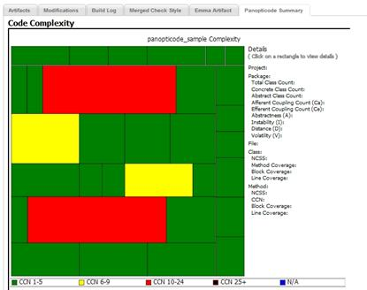

Dashboard
What is a CruiseControl Dashboard
The CruiseControl Dashboard is a powerful tool to help you visualise your project status. Project build status is colour-coded so that you can get a snapshot of how your projects are doing instantly.

When you mouse-over the project builds, represented in the coloured squares, the status is shown.
What do the squares mean?
- This indicates a project build has been successful for more than 24 hours.
- This indicates a project build has been successful for less than 24 hours.
- This indicates a project build that has failed for more than 24 hours.
- This indicates a project build that has failed for less than 24 hours.
- This indicates a project is currently building.
- This indicates an inactive project.
Here is a list of options you can do: add a project, link up the RSS feed to the project build, XML for CCTray, and access the CruiseControl JMX console.

Build Page

This is the Build page. It enables you to look at each project build and its status. You can do the following actions on each project build:
- View all successful build
- View all builds
- Force build
- Access individual project build's RSS feed and the CruiseControl JMX console
Build Detail Page

The build detail page contains project build information such as the last successful build, build number, duration of the build and the last 25 builds.
Building Page

This is the building page. Whilst the project is building, the Ant output is displayed on-screen.
Extending the project detail page
You can extend what you can see about a particular project build by adding tabs to the default ones.
Panopticode

Panopticode is provided by default. You can easily enable Panopticode views on your project builds. For more details go to CruiseControl Widgets.
Administration Page

In this page you can enter the configuration file path and edit the configuration file. You can also remove project builds via this page by manually deleting the project builds.
Installation guide
Users are free to use system properties or dashboard configuration file to configure the dashboard application.
System property
Administrators can pass system properties through cruisecontronl.sh/cruisecontrol.bat or the startup script of the web container.
| Property | Value | Default Value | Description |
| cc.config.file | String | N/A | path to CRUISE_HOME/config.xml |
| cc.config.editable | true/false | true | whether users can edit config.xml from gui |
| cc.jmxport | int | 8000 | port of the JMX HttpAdapter |
| cc.rmiport | int | 1099 | RMI port of the JMX Controller |
| cc.config.forcebuild | enabled/disabled | enabled | whether users can force a build from gui |
| cc.logdir | String | logs | This should be the full path to your CruiseControl logs directory. |
| cc.artifacts | String | artifacts | This should be the full path to your CruiseControl artifacts directory. |
| cc.projects | String | projects | This should be the full path to your CruiseControl projects directory. |
Dashboard Configuration File
By default Dashboard uses dashboard-config.xml which is under CruiseControl installation directory as dashboard configuration file. Administrator can specify the location of the dashboard configuration file in cruisecontronl.sh/cruisecontrol.bat by setting the value of dashboard.config system property.
<buildloop>
<dashboard>
<buildloop>
The <buildloop> tag is used to specify properties related to cruisecontrol build loop.
Attributes
| Attribute | Description |
|---|---|
| home | Absolute path to cc.home. |
| configfile | Absolute path to your configuration file of cruisecontrol. |
| logsdir | This should be the full path to your CruiseControl logs directory. |
| artifactsdir | This should be the full path to your CruiseControl artifacts directory. |
| projectsdir | This should be the full path to your CruiseControl projects directory. |
| jmxport | port of the JMX HttpAdapter. |
| rmiport | RMI port of the JMX Controller. |
<features>
<dashboard>
<features>
The <features> tag is used to specify properties which will customize the behaviour of dashboard.
Attributes
| Attribute | Description |
|---|---|
| allowforcebuild | whether users can force a build from gui. true or false. |
| alloweditconfig | whether users can edit config.xml from gui. true or false. |
<trackingtool>
<dashboard>
<trackingtool>
The <trackingtool> tag is used to specify properties which will be used to create hyper link to project management tools. Each of your projects could have zero or one <trackingtool>
Dashboard will parse your commit message to find story number which following with some keywords. and generate the hyper link based on the baseurl you defined and the story number.
For example: If you check in source code with message "I fixed bug #425" and define your <trackingtool> as below:
<trackingtool projectname="cc" baseurl="http://mingle05/projects/ccee/cards/" keywords="#,build"/>
In this case, Dashboard will create hyperlink "<a href=http://mingle05/projects/ccee/cards/425>I fixed bug #425</a>" for the commit message.Attributes
| Attribute | Description |
|---|---|
| projectname | Your project name in cruisecontrol. |
| baseurl | The base url of your project in project management tool |
| keywords | The keywords in your commit message. separated by comma. |
Context parameter (Deprecated. Use System Property or Dashboard configuration file instead.)
Administrators can manually edit the web.xml to configure the dashboard application.
| Property | Value | Default Value | Description |
| cruisecontrol.config.file | String | N/A | path to CRUISE_HOME/config.xml |
| cruisecontrol.config.editable | true/false | true | whether users can edit config.xml from gui |
| cruisecontrol.jmxport | int | 8000 | port of the JMX HttpAdapter |
| cruisecontrol.rmiport | int | 1099 | RMI port of the JMX Controller |
| cruisecontrol.config.forcebuild | enabled/disabled | enabled | whether users can force a build from gui |
| cruisecontrol.logdir | String | logs | This should be the full path to your CruiseControl logs directory. |
| cruisecontrol.artifacts | String | artifacts | This should be the full path to your CruiseControl artifacts directory. |
| cruisecontrol.projects | String | projects | This should be the full path to your CruiseControl projects directory. |